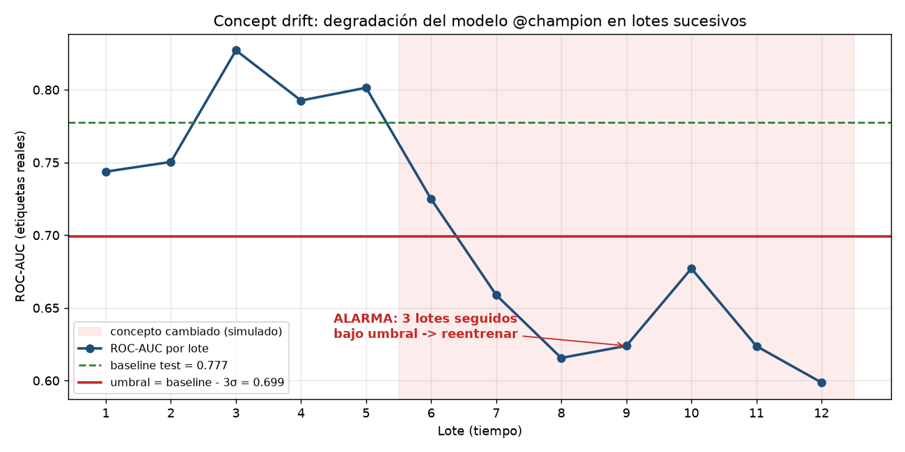

RiskCard-
--/100
Riesgo de no pagar el próximo mes · Random Forest
Cliente-
Cupo-
Uso del cupo-
Crea un cliente con los controles de la derecha. Tres modelos de machine learning estiman al instante su riesgo de no pagar.
De 0 (muy bajo) a 100 (muy alto). Toca un modelo para verlo en la tarjeta.
Cambios que dependen del cliente, según el modelo elegido. No es un consejo financiero.
Puntos de riesgo que aporta cada dato, comparado con un cliente típico.
Cada casilla es el mismo cliente con otro cupo y otro atraso en el último mes. El círculo blanco es tu cliente.
Random Forest, Gradient Boosting y Regresión logística aprendieron de los mismos 18.000 clientes. Aquí se ponen a prueba con otros 6.000 que nunca vieron.
ROC-AUC va de 0,5 (adivinar, la diagonal) a 1 (perfecto). Cuanto más arriba va la curva, mejor.
Elige desde qué nivel de riesgo se alerta. Si lo bajas, se detectan más morosos, pero también se alerta a más clientes que sí pagan.
Barra más larga: el modelo empeora más si esos datos se desordenan al azar.
Son 10 clientes reales que el modelo nunca vio: 5 pagaron y 5 no. Mira sus datos y decide. Al final se comparan los aciertos.
RiskCard es la cara visible de un proyecto de MLOps completo: el modelo se registró, se desplegó, se vigiló y se llevó a la web.
prepare_data.pytrain.py@champion, nunca un archivo.register.pyDockerfilek8s/src/drift/web/
Captura real del sistema, desplegado en un clúster local.

En una simulación, el modelo empeora desde el lote 6 y la alarma salta en el 9.
De estos datos aprendieron los modelos. Impago significa no pagar el mes siguiente, y el historial de pagos lo anticipa mucho mejor que la edad.